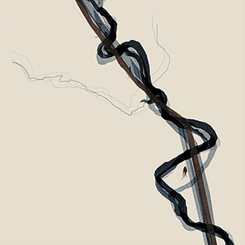
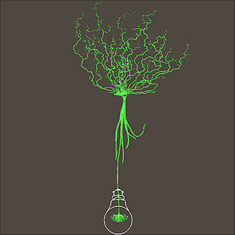
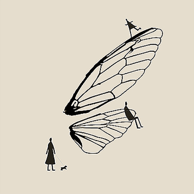
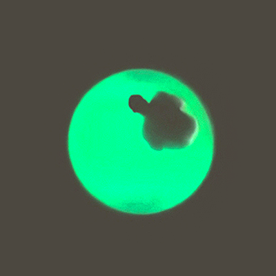
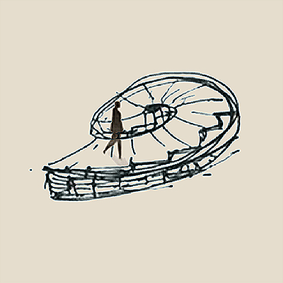
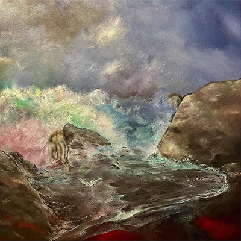
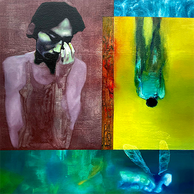
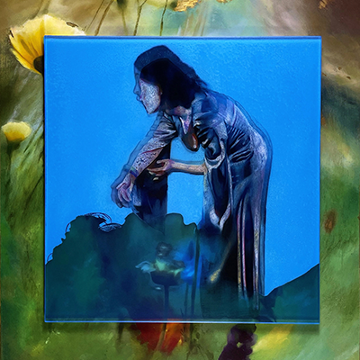

Portfolio: Professional and Academic Projects by Avantika Mukhopadhyay
Academic Projects
1. CUT - CONNECT - HEAL

ICON

2. HIVE PARK

3. ISOLATION

4. SHELL HOUSE

Paintings
2. Relics of the Self

3. The Colours of Light

4. ‘Hearts like Ours’
